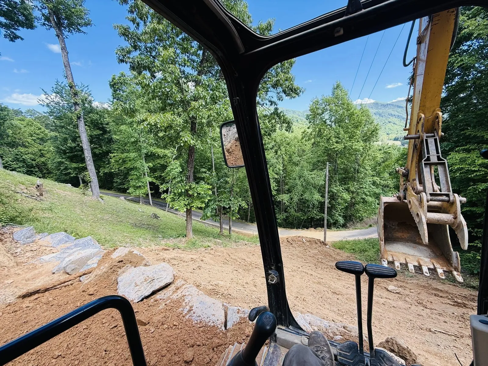
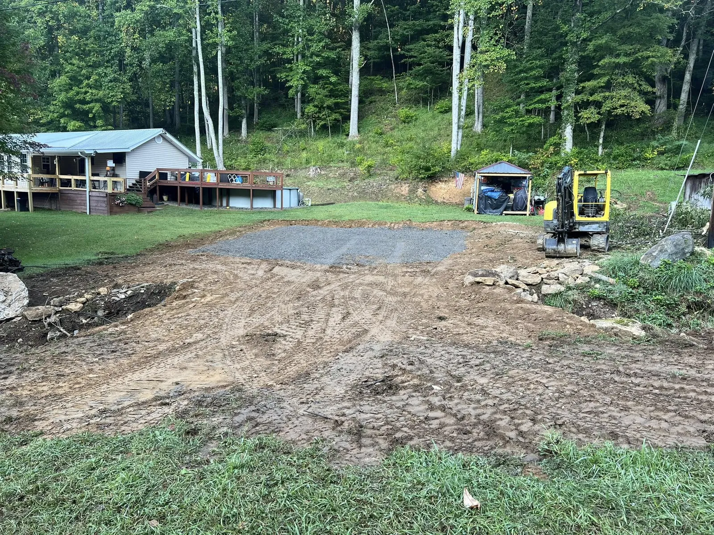

Excavation & Site Prep
Clearing, mass excavation, undercut, and subgrade prep for commercial and hillside residential sites across Asheville.
View serviceAsheville is the largest city in the mountains and the seat of Buncombe County, about an hour southwest of Burnsville. It is where a lot of the region's commercial and development work happens, and where hillside lots keep site work interesting.

Asheville anchors Buncombe County at the meeting of the French Broad and Swannanoa rivers. It is the busiest building market in Western North Carolina, with steady commercial, development, and infill residential work, much of it on the steep in-town hillsides and clay-heavy soils that make Asheville lots their own kind of challenge.
As a NC licensed commercial General Contractor and an NCDOT pre-qualified firm, AGLM is built to carry real scope in a market like this, whether that means holding the site-work prime or plugging in as the dependable earthwork sub for a GC or developer. We run about an hour from Burnsville into Asheville, close enough to be a genuine local option, not an out-of-region giant.

Asheville's steep lots and heavier soils put erosion control and stormwater compliance front and center on nearly every job.
Licensed commercial GC and NCDOT pre-qualified, able to hold the prime contract or run site work as a reliable subcontractor.
Temporary and permanent measures kept in compliance so inspections stay clean and Buncombe County schedules hold.
Benching, retaining, and drainage that turn a steep Asheville hillside into a stable, buildable site.
From a commercial pad to a steep infill lot, we bring licensed, compliant site work to the region's busiest market.
Clearing, mass excavation, undercut, and subgrade prep for commercial and hillside residential sites across Asheville.
View servicePrecision grade, benching, and compaction for the steep in-town lots that define Buncombe County building.
View serviceStormwater management, catch basins, and detention work sized for Asheville's permits and its clay soils.
View serviceEngineered retaining walls to hold grade on steep Asheville hillsides and infill sites.
View serviceClearing, grubbing, and haul-off to open a wooded Buncombe County parcel for development.
View serviceTell us about the property and the scope. We'll get back fast.